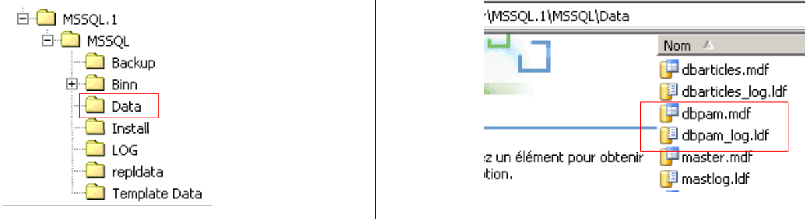

3. L'étude de cas
Nous souhaitons écrire une application .NET permettant à un utilisateur de faire des simulations de calcul de la paie des assistantes maternelles de l'association " Maison de la petite enfance " d'une commune. Nous nous intéresserons autant à l'organisation du code DotNet de l'application qu'au code lui-même.
3.1. La base de données
Les données statiques utiles pour construire la fiche de paie sont placées dans une base de données SQL Server Express nommée dbpam (pam=Paie Assistante Maternelle). Cette base a un administrateur appelé sa ayant le mot de passe msde.
 |
La base a trois tables, EMPLOYES, COTISATIONS et INDEMNITES, dont la structure est la suivante :
Table EMPLOYES : rassemble des informations sur les différentes assistantes maternelles
Structure :
 |
|
Son contenu pourrait être le suivant :

Table COTISATIONS : rassemble les taux des cotisations sociales prélevées sur le salaire
Structure :
 |
Son contenu pourrait être le suivant :
Les taux des cotisations sociales sont indépendants du salarié. La table précédente n'a qu'une ligne.
Table INDEMNITES : rassemble les différentes indemnités dépendant de l'indice de l'employé
 |
|
Son contenu pourrait être le suivant :

On notera que les indemnités peuvent varier d'une assistante maternelle à une autre. Elles sont en effet associées à une assistante maternelle précise via l'indice de traitement de celle-ci. Ainsi Mme Marie Jouveinal qui a un indice de traitement de 2 (table EMPLOYES) a un salaire horaire de 2,1 euros (table INDEMNITES).
Les relations entre les trois tables sont les suivantes :
 |
Il y a une relation de clé étrangère entre la colonne EMPLOYES(INDICE) et la colonne INDEMNITES(INDICE).
La base de données [dbpam] ainsi créée donne naissance à deux fichiers dans le dossier de SQL Server Express :
 |
Les fichiers [dbpam.mdf, dbpam_log.ldf] peuvent être transportés sur une autre machine et être réattachés au SGBD SQL Server Express de cette machine. Voici comment procéder :
- les fichiers de la BD [dbpam] sont dupliqués dans un dossier
 |
- on lance SQL Server Express
- avec le client SQL Server Management Studio Express, on attache le fichier [dbpam.mdf] au SGBD :
 |
 |
- clic droit sur [Databases] / Attach
- choix du fichier [dbpam.mdf] via un bouton [Add] non représenté
- le fichier attaché va donner naissance à une BD qui ne doit pas déjà exister. Ici, dans le champ [Attach As] on a donné le nom [dbpam2] à la nouvelle BD.
- on voit la nouvelle BD et ses tables
Cette technique de l'attachement d'une BD est utile pour transporter une BD d'un poste à un autre et nous l'utiliserons parfois ici.
3.2. Mode de calcul du salaire d'une assistante maternelle
Nous présentons maintenant le mode de calcul du salaire mensuel d'une assistante maternelle. Nous prenons pour exemple, le salaire de Mme Marie Jouveinal qui a travaillé 150 h sur 20 jours pendant le mois à payer.
Les éléments suivants sont pris en compte : | | |
Le salaire de base de l'assistante maternelle est donné par la formule suivante : | ||
Un certain nombre de cotisations sociales doivent être prélevées sur ce salaire de base : | | |
Total des cotisations sociales : | ||
Par ailleurs, l'assistante maternelle a droit, chaque jour travaillé, à une indemnité d'entretien ainsi qu'à une indemnité de repas. A ce titre elle reçoit les indemnités suivantes : | | |
Au final, le salaire net à payer à l'assistante maternelle est le suivant : |
3.3. Rappels ADO.NET
L'application de calcul de paie a besoin des informations de la base de données [dbpam]. Son architecture sera la suivante :
 |
- en [1], l'utilisateur fait une demande
- en [2], l'application de paie la traite.
- elle peut alors avoir besoin des données de la base de données. Elle fait alors une requête au fournisseur (provider) ADO.NET du SGBD utilisé [4].
- celui-ci exploite la base de données [5] et rend ses résultats au fournisseur ADO.NET qui lui-même les remonte à l'application
- celle-ci exploite ces résultats et élabore une réponse [5] pour l'utilisateur
Nous rappelons maintenant les principales interfaces présentées par un fournisseur ADO.NET à ses clients [3].
En mode connecté, l'application :
- ouvre une connexion avec la source de données
- travaille avec la source de données en lecture/écriture
- ferme la connexion
Trois interfaces ADO.NET sont principalement concernées par ces opérations :
- IDbConnection qui encapsule les propriétés et méthodes de la connexion.
- IDbCommand qui encapsule les propriétés et méthodes de la commande SQL exécutée.
- IDataReader qui encapsule les propriétés et méthodes du résultat d'un ordre SQL Select.
L'interface IDbConnection
Sert à gérer la connexion avec la base de données. Parmi les méthodes M et propriétés P de cette interface on trouve les suivantes :
Nom | Type | Rôle |
P | chaîne de connexion à la base. Elle précise tous les paramètres nécessaires à l'établissement de la connexion avec une base précise. | |
M | ouvre la connexion avec la base définie par ConnectionString | |
M | ferme la connexion | |
M | démarre une transaction. | |
P | état de la connexion : ConnectionState.Closed, ConnectionState.Open, ConnectionState.Connecting, ConnectionState.Executing, ConnectionState.Fetching, ConnectionState.Broken |
Si Connection est une classe implémentant l'interface IDbConnection, l'ouverture de la connexion peut se faire comme suit :
L'interface IDbCommand
Sert à exécuter un ordre SQL ou une procédure stockée. Parmi les méthodes M et propriétés P de cette interface on trouve les suivantes :
Nom | Type | Rôle |
P | indique ce qu'il faut exécuter - prend ses valeurs dans une énumération : - CommandType.Text : exécute l'ordre SQL défini dans la propriété CommandText. C'est la valeur par défaut. - CommandType.StoredProcedure : exécute une procédure stockée dans la base | |
P | - le texte de l'ordre SQL à exécuter si CommandType= CommandType.Text - le nom de la procédure stockée à exécuter si CommandType= CommandType.StoredProcedure | |
P | la connexion IDbConnection à utiliser pour exécuter l'ordre SQL | |
P | la transaction IDbTransaction dans laquelle exécuter l'ordre SQL | |
P | la liste des paramètres d'un ordre SQL paramétré. L'ordre update articles set prix=prix*1.1 where id=@id a le paramètre @id. | |
M | pour exécuter un ordre SQL Select. On obtient un objet IDataReader représentant le résultat du Select. | |
M | pour exécuter un ordre SQL Update, Insert, Delete. On obtient le nombre de lignes affectées par l'opération (mises à jour, insérées, détruites). | |
M | pour exécuter un ordre SQL Select ne rendant qu'un unique résultat comme dans : select count(*) from articles. | |
M | pour créer les paramètres IDbParameter d'un ordre SQL paramétré. | |
M | permet d'optimiser l'exécution d'une requête paramétrée lorsqu'elle est exécutée de multiples fois avec des paramètres différents. |
Si Command est une classe implémentant l'interface IDbCommand, l'exécution d'un ordre SQL sans transaction aura la forme suivante :
L'interface IDataReader
Sert à encapsuler les résultats d'un ordre SQL Select. Un objet IDataReader représente une table avec des lignes et des colonnes, qu'on exploite séquentiellement : d'abord la 1ère ligne, puis la seconde, .... Parmi les méthodes M et propriétés P de cette interface on trouve les suivantes :
Nom | Type | Rôle |
P | le nombre de colonnes de la table IDataReader | |
M | GetName(i) rend le nom de la colonne n° i de la table IDataReader. | |
P | Item[i] représente la colonne n° i de la ligne courante de la table IDataReader. | |
M | passe à la ligne suivante de la table IDataReader. Rend le booléen True si la lecture a pu se faire, False sinon. | |
M | ferme la table IDataReader. | |
M | GetBoolean(i) : rend la valeur booléenne de la colonne n° i de la ligne courante de la table IDataReader. Les autres méthodes analogues sont les suivantes : GetDateTime, GetDecimal, GetDouble, GetFloat, GetInt16, GetInt32, GetInt64, GetString. | |
M | Getvalue(i) : rend la valeur de la colonne n° i de la ligne courante de la table IDataReader en tant que type object. | |
M | IsDBNull(i) rend True si la colonne n° i de la ligne courante de la table IDataReader n'a pas de valeur ce qui est symbolisé par la valeur SQL NULL. |
L'exploitation d'un objet IDataReader ressemble souvent à ce qui suit :